专题4.2 比较线段的长短
专题4.2 比较线段的长短

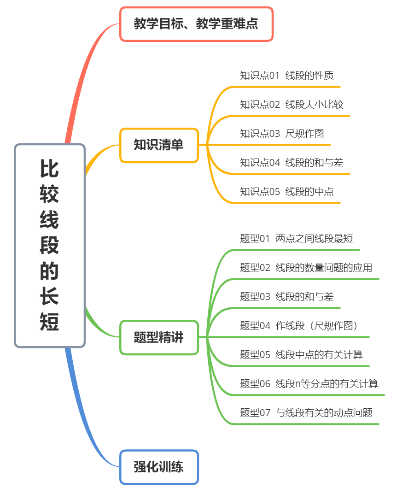

教学目标 | 1. 了解“两点之间线段最短”的性质及两点间距离的定义，能结合实例解释应用。 2. 掌握比较线段长短的度量法与叠合法，能用尺规作一条线段等于已知线段。 3. 理解线段中点概念及几何意义，能运用线段和差、中点性质解决简单计算问题。 |
教学重难点 | 1.重点 （1）心是掌握线段长短的比较方法（度量法、叠合法），能规范使用直尺、圆规进行操作。 （2）关键是理解“两点之间线段最短”的性质和线段中点的概念，并能用于解决简单问题。 2.难点 （1）难点在于叠合法的规范操作，尤其是通过图形语言理解“端点重合、同侧放置”的比较逻辑。 （2）难点在于运用线段中点性质及和差关系，进行多步骤的线段长度推理与计算。 |

知识点01 线段的性质
两点之间的所有连线中，线段最短.简单地：两点之间线段最短.我们把两点之间线段的长度，叫做这两点之间的距离.
【即学即练1】
1．高速公路是指专供汽车高速行驶的公路．高速公路在建设过程中，通常要从大山中开挖隧道穿过，把道路取直以缩短路程．其中的数学原理是（ ）

A．两点之间，线段最短 B．两点确定一条直线
C．平行线之间的距离最短 D．垂线段最短
【答案】A
【分析】本题考查线段的性质，解题的关键是掌握：两点之间，线段最短．
【详解】解：在高速公路的建设中，通常从大山中开挖隧道穿过，把道路取直，以缩短路程，这是因为：两点之间，线段最短．
故选A．
知识点02 线段大小比较
1.比较线段大小的方法：（1）目测法；（2）度量法；（3）叠合法
2.叠合比较法：利用直尺和圆规把线段放在同一条直线上，使其中一个端点重合，另一个端点位于重合端点同侧，根据另一端点与重合端点的远近来比较长短．如下图：
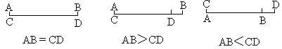
【说明】线段的比较方法除了叠合比较法外，度量比较法也是常用的方法．
【即学即练2】
1．如图，点 、
、 在线段
在线段 上，点
上，点 、
、 分别是
分别是 、
、 的中点，
的中点， ，且，那么线段
，且，那么线段 的长是 ．
的长是 ．

【答案】
【分析】本题考查了线段和差的计算以及线段中点的定义，比例的性质，根据题意得
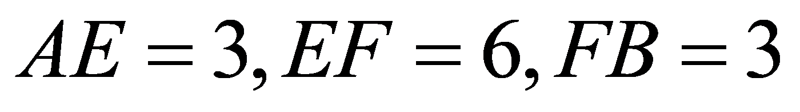
，根据中点的性质可得 ，进而根据
，进而根据 ，即可求解．
，即可求解．【详解】解：∵，且，
∴
∵点、分别是、的中点，
∴
∴ ，
，
故答案为：．
知识点03 尺规作图
仅用圆规和没有刻度的直尺作图的方法叫做尺规作图.
【说明】（1）只使用圆规和直尺，并且只准许使用有限次，来解决不同的平面几何作图题．
（2）直尺必须没有刻度，无限长，且只能使用直尺的固定一侧.只可以用它来将两个点连在一起，不可以在上面画刻度．
（3）圆规可以开至无限宽，但上面也不能有刻度.它只可以拉开成之前构造过的长度．
【即学即练3】
1．作图题：如图，平面上有四个点A，B，C，D，根据下列语句画图：
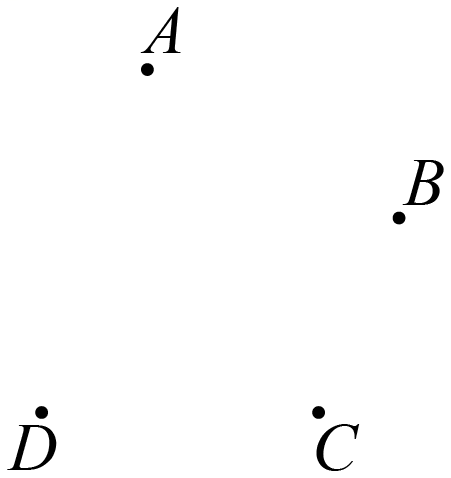
(1)做射线 ；
；
(2)取一点P，使点P既在直线上又在直线 上；
上；
(3)若A、C两点之间的距离为4，B、D两点之间的距离为3，点M到A，B，C，D四点距离之和最短．画出点M的位置，并写出该最短距离和是___________．
【答案】(1)见解析
(2)见解析
(3)图见解析，
【分析】本题考查射线，直线和线段，以及线段的性质：
（1）根据射线的定义，作图即可；
（2）直线 的交点即为点
的交点即为点 ；
；
（3）两点之间线段最短，得到 ，
， 的交点即为点，再进行求解即可．
的交点即为点，再进行求解即可．
【详解】（1）解：作射线，如图；
（2）直线和直线的交点就是点P；
（3）连接，交于M，点M即为所求，最短距离和是
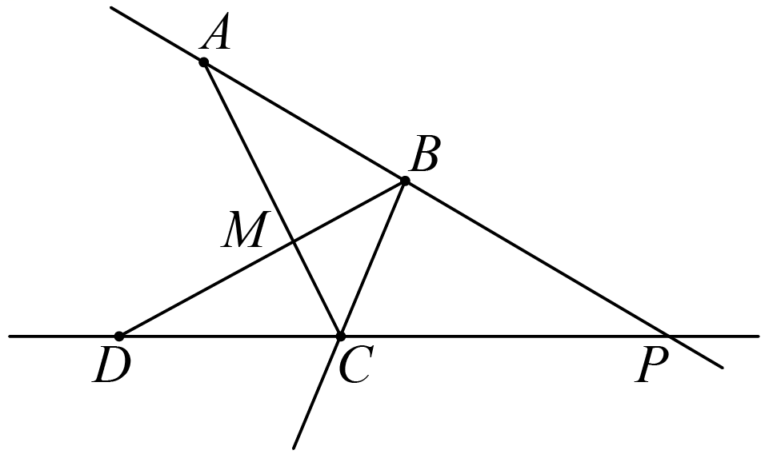
知识点04 线段的和与差
如下图：线段AB上有一点C，则AC+BC=AB；AC=AB - BC； BC=AB - AC，
在这里线段AC、BC、AB表示线段的长度，如AC+BC=AB表示AC长度与BC长度之和等于AB长度.
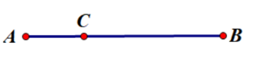
【即学即练4】
1．如图，点
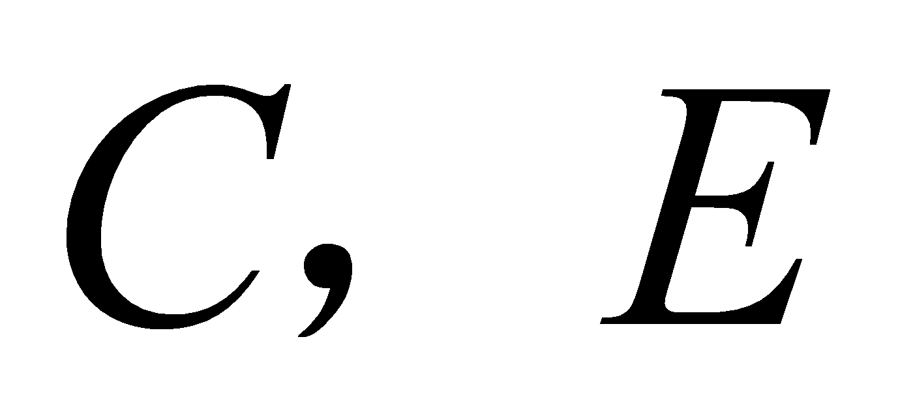
是线段上两点，点 为线段的中点，
为线段的中点， ，
， ．
．
(1)图中共有_______条线段；
(2)求的长；
(3)若
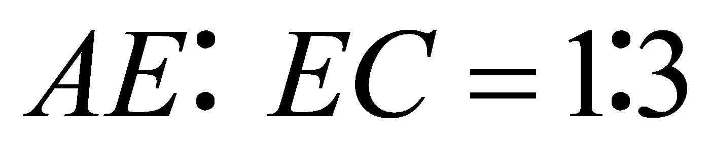
，求 的长．
的长．【答案】(1) ；
；
(2) ；
；
(3) ．
．
【分析】（ ）根据线段的定义即可求解；
）根据线段的定义即可求解；
（）根据线段中点定义及线段和差关系即可求解；
（）利用线段和差关系求出，再根据线段的比即可求解；
本题考查了线段，线段的和差，中点的定义，正确识图是解题的关键．
【详解】（1）解：由图可得，线段共有
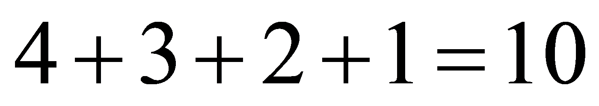
条，故答案为：；
（2）解：∵点为线段的中点，，
∴
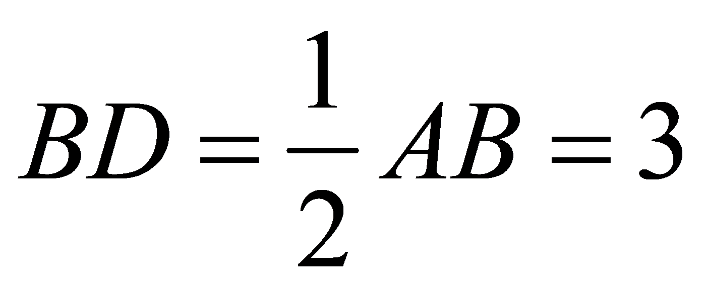
，∵，
∴ ；
；
（3）解：∵，
∴
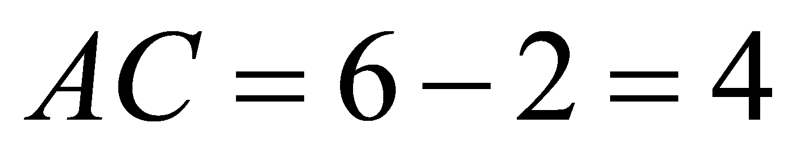
，∵，
∴ ．
．
知识点05 线段的中点
线段的中点：把一条线段分成两条相等线段的点，叫做线段的中点．如下图所示，点C是线段AB的中点，则AC=CB= AB，或AB=2AC=2BC．
AB，或AB=2AC=2BC．
【说明】若点C是线段AB的中点，则点C一定在线段AB上．
【即学即练5】
1．线段上，M为的中点，N为 的中点，
的中点， ，
， ，
， （ ）．
（ ）．

A． B．
B． C．
C． D．
D．
【答案】D
【分析】本题考查与线段中点有关的计算，解题的关键是掌握线段中点的性质．先由 ，再根据中点的性质得，，最后由线段的和差关系即可求出结果．
，再根据中点的性质得，，最后由线段的和差关系即可求出结果．
【详解】解：∵，，
∴，
∵点M是的中点，点N是的中点，
∴，，
∴
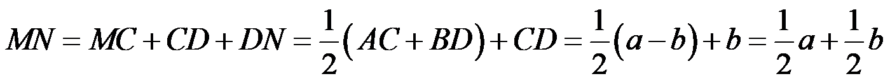
．故选：D．
2．如图， ，
， ，
， ，是直线
，是直线 上的四个点，，分别是，的中点．
上的四个点，，分别是，的中点．
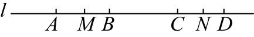
(1)如果， ，
， ，则
，则 的长为________cm；
的长为________cm；
(2)如果， ，则的长为_________cm；
，则的长为_________cm；
(3)如果 ，
， ，求的长，并说明理由．
，求的长，并说明理由．
【答案】(1)
(2)14
(3) ．
．
【分析】本题考查了两点间的距离，利用线段的和差得出
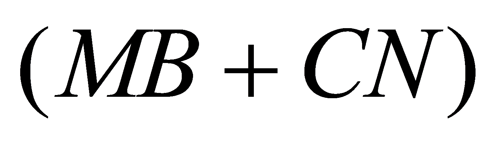
的长，利用线段中点的性质，得出，．（1）根据线段的和，可得 的长，根据线段中点的性质，可得与
的长，根据线段中点的性质，可得与 的关系，与
的关系，与 的关系，根据线段的和，可得答案；
的关系，根据线段的和，可得答案；
（2）先根据线段的和与差，计算出 的长，再根据线段中点的性质，可得与的关系，与的关系，根据线段的和，可得答案；
的长，再根据线段中点的性质，可得与的关系，与的关系，根据线段的和，可得答案；
（3）根据（2）的解题过程，即可解答．
【详解】（1）解： ，，
，，
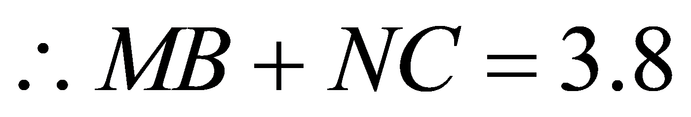
， ，分别是，的中点，
，分别是，的中点，
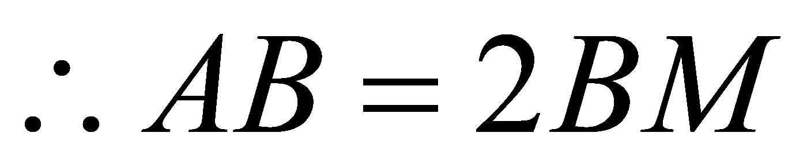
，，，
 ，
，
故答案为：；
（2）解： ，，
，，
 ，
，
，分别是，的中点，
，，
 ，
，
 ，
，
故答案为：14；
（3）解： ，，
，，
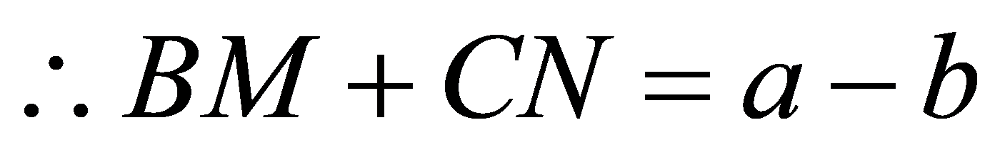
，，分别是，的中点，
，，
 ，
，
 ，
，
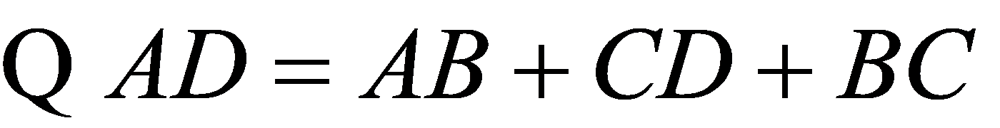
，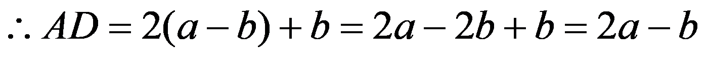
．
题型01 两点之间线段最短
【典例1】（25-26八年级上·全国·课后作业）如图，田亮同学用剪刀沿直线将一片平整的树叶剪掉一部分，发现剩下树叶的周长比原树叶的周长要小，能正确解释这一现象的数学知识是 ．
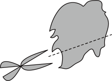
【答案】两点之间线段最短
【分析】本题主要考查了线段的性质，掌握两点之间线段最短是解题的关键．
根据两点之间线段最短即可解答．
【详解】解：田亮同学用剪刀沿直线将一片平整的树叶剪掉一部分，发现剩下树叶的周长比原树叶的周长要小，能正确解释这一现象的数学知识是两点之间，线段最短．
故答案为：两点之间线段最短．
【变式1】（24-25七年级上·全国·阶段练习）小海同学计划到距家直线距离为12.9公里的天竺山森林公园游玩．他通过导航软件发现有三条可选路线，如图所示，长度分别为15.8公里，15.4公里，18.4公里．能解释这一现象的数学知识是 ．
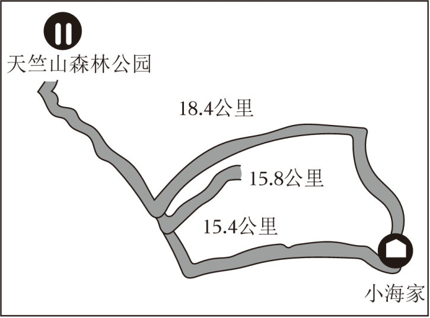
【答案】两点之间，线段最短
【分析】本题考查了两点之间，线段最短，熟练掌握两点之间，线段最短是解题关键．
根据两点之间，线段最短求解即可．
【详解】解：能解释这一现象的数学知识是两点之间，线段最短．
故答案为：两点之间，线段最短．
【变式2】（24-25七年级上·吉林长春·期末）安溪地处戴云山脉东南坡，山峦起伏，地形较为复杂．如图，在 村与
村与 村之间有一座大山，原来从村到村，需沿道路
村之间有一座大山，原来从村到村，需沿道路 绕过村庄间的大山，打通，间的隧道后，就可直接从村到村，缩短村到村的路程.其中蕴含的数学道理是 ．
绕过村庄间的大山，打通，间的隧道后，就可直接从村到村，缩短村到村的路程.其中蕴含的数学道理是 ．

【答案】两点之间，线段最短
【分析】本题考查线段的性质：两点之间，线段最短．根据该性质即可解答．
【详解】解：蕴含的数学道理是两点之间，线段最短，
故答案为：两点之间，线段最短．
【变式3】（24-25七年级上·辽宁锦州·阶段练习）锦州市开展冬季研学活动，从市府广场出发，开车去东方华地城，打开导航，显示两地直线距离为 ，但导航提供的三条可选路线长却分别为
，但导航提供的三条可选路线长却分别为
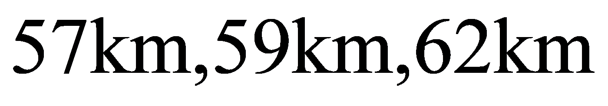
．能解释这一现象的数学知识是 ．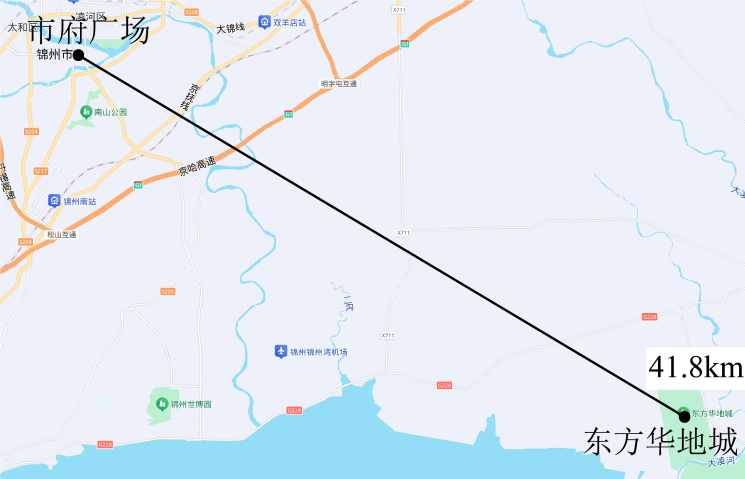
【答案】两点之间，线段最短
【分析】本题主要考查了线段的性质，掌握线段的性质两点之间、线段最短是解题的关键．
直接运用线段的性质即可解答．
【详解】解：打开导航，显示两地直线距离为
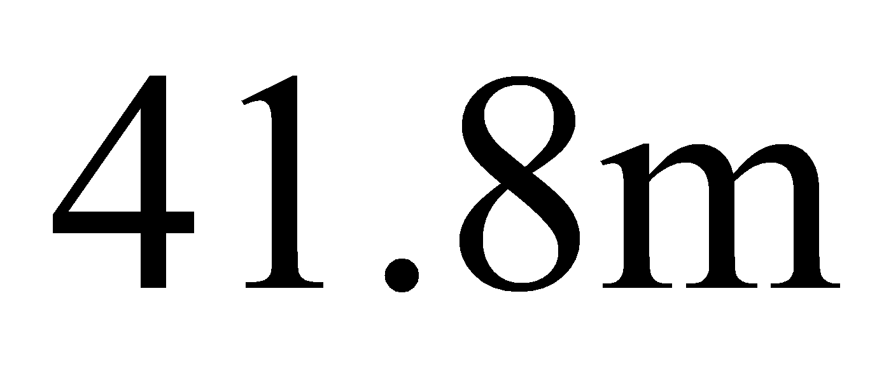
，但导航提供的三条可选路线长却分别为，能解释这一现象的数学知识是：两点之间，线段最短．故答案为：两点之间，线段最短．
题型02 线段的数量问题的应用
【典例2】（24-25七年级上·全国·课后作业）如图是广深港高铁线路图，往返于广州南站和深圳北站的高铁列车中途停靠庆盛站、虎门站和光明城站，则有 种不同的票价，要准备 种车票．

【答案】 10 20
【分析】本题主要考查了线段条数问题，分别用A、B、C、D、E表示广州南站，深圳北站，庆盛站、虎门站和光明城站，那么图中线段的条数即为票价种类数，由于两个站之间有往返票，则两个站之间有2种票，据此求解即可．
【详解】解：如图所示，分别用A、B、C、D、E表示广州南站，深圳北站，庆盛站、虎门站和光明城站，
∵一共有广州南站，深圳北站，庆盛站、虎门站和光明城站，共5个站，且每两个站之间有一种票价，
∴图中线段的条数即为票价种类数，
∵图中有线段，共10条线段，
∴有10种不同的票价，
∵两个站之间有往返票，
∴两个站之间有2种票，
∴要准备
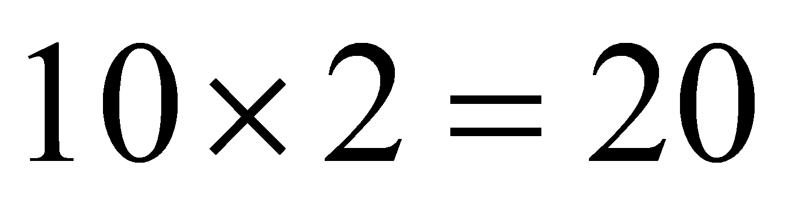
种车票，故答案为：10；20．
【变式1】（24-25七年级上·全国·课后作业）如图，点，， 在直线
在直线 上，则图中有 条线段， 条射线，有 条直线．
上，则图中有 条线段， 条射线，有 条直线．
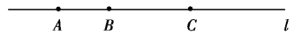
【答案】 3 6 1
【分析】本题考查了直线、射线和线段的认识，直线没有端点，是无限长的；射线有一个端点，可以向一端无限延伸，不能度量长度；线段有两个端点，可以度量长度．据此解答．
【详解】解：由图可知，直线上有A、B、C三个点，
根据直线的特征可知，图中有1条直线；
根据射线的特征可知，以A为端点时，有2条射线；以B为端点时，有2条射线；以C为端点时，有2条射线，
所以一共有 （条）射线；
（条）射线；
根据线段的特征可知，图中有线段 、线段
、线段 、线段
、线段 ，3条线段．
，3条线段．
即图中有1条直线，6条射线，3条线段．
故答案为：1；6；3．
【变式2】（24-25七年级上·全国·课后作业）如图，图中有线段 条，分别是线段 ；图中有射线 条，分别是射线 、 、 、 、 ．

【答案】 6 5 

【分析】此题考查了线段、射线的识别，根据线段和射线的定义进行解答即可．
【详解】解：如图，图中有线段6条，分别是线段；图中有射线5条，分别是射线、、、、．
故答案为：6，，5，、、、、
【变式3】（24-25七年级上·湖南长沙·期末）湖南湘江新区大王山欢乐云巴对外运营．一张云巴票就能领略沿途 余个景点，感受大王山人文风情，如图，乘云巴从山塘站出发，沿途经过
余个景点，感受大王山人文风情，如图，乘云巴从山塘站出发，沿途经过 个车站方可到达观音港站，那么运营公司在山塘站，观音港站两站之间往返需要安排不同的车票 种．
个车站方可到达观音港站，那么运营公司在山塘站，观音港站两站之间往返需要安排不同的车票 种．
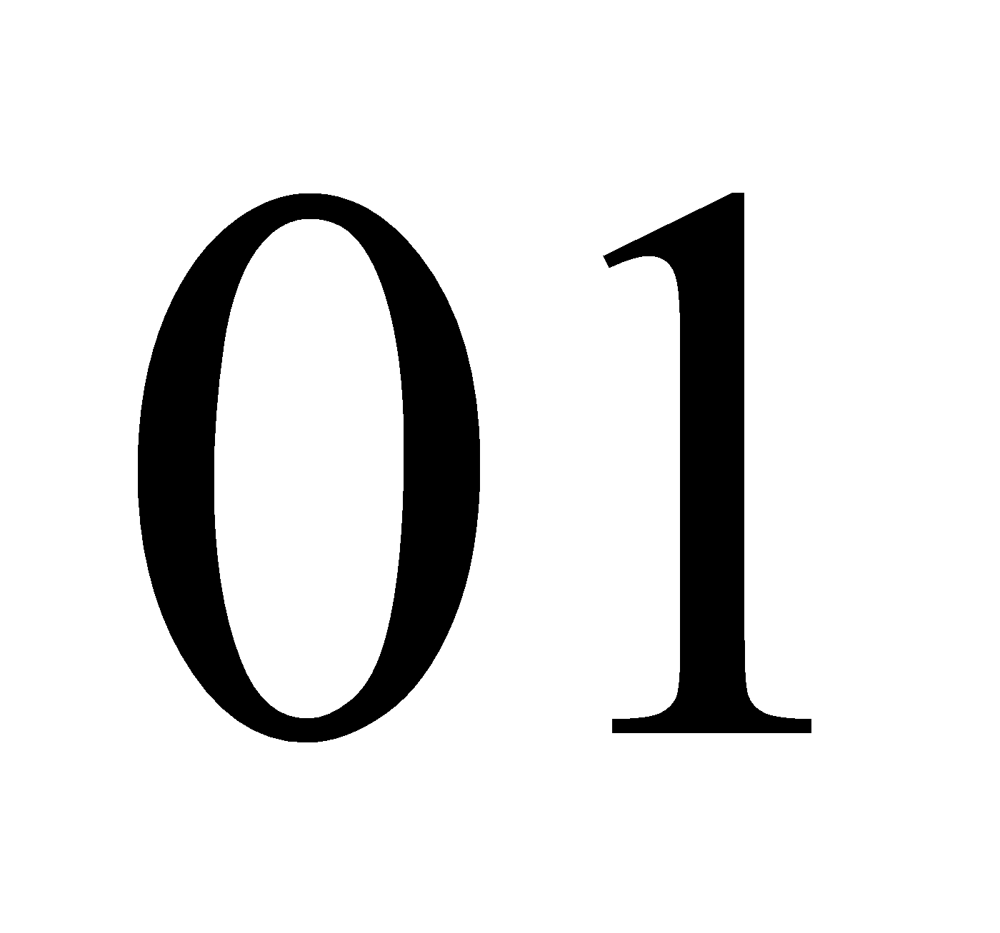 山塘站 |
|
|
| 大王山站 |
|
|
|
|
 欢乐雪域站
欢乐雪域站 欢乐城站
欢乐城站 华谊电影小镇站
华谊电影小镇站 桐溪公园站
桐溪公园站 植物公园站
植物公园站 学士站
学士站 观音港站
观音港站【答案】
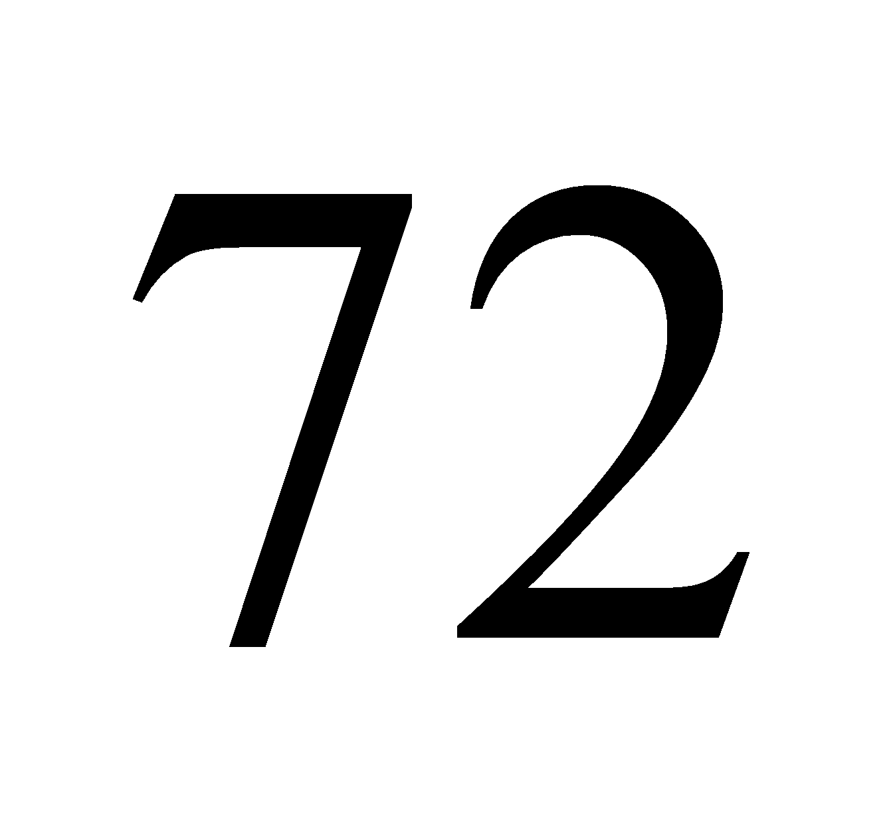
【分析】本题考查了如何求线段的条数的问题，设首尾两站为点 ，点是线段上的七个点，求出之间的所有线段条数，进而即可求解，理解题意是解题的关键．
，点是线段上的七个点，求出之间的所有线段条数，进而即可求解，理解题意是解题的关键．
【详解】解：设首尾两站为点，点是线段上的七个点，
则图中共有线段
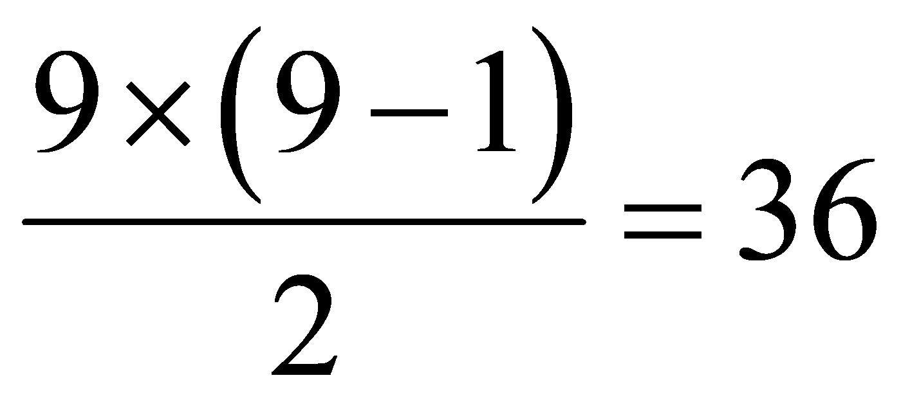
条，∵到与到车票不同，
∴从到的车票共有
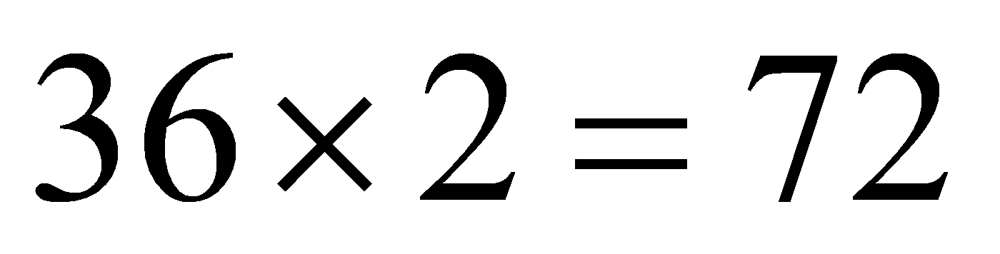
种，故答案为：．
题型03 线段的和与差
【典例3】（24-25七年级上·四川成都·阶段练习）如图，线段 ，点是线段上一点，且
，点是线段上一点，且
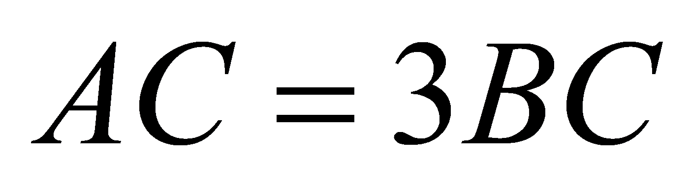
，点 为线段的中点，则线段
为线段的中点，则线段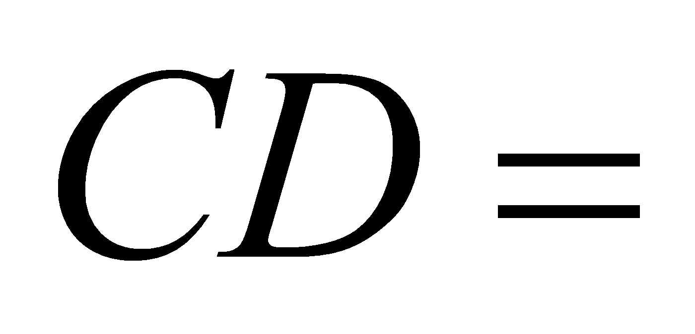
．【答案】
【分析】本题考查线段的和差，线段中点的定义，根据 ，代入数据进行计算即可求出的长；再求出的长，然后根据线段中点的定义求解即可．准确识图并掌握线段中点的定义是解题的关键．
，代入数据进行计算即可求出的长；再求出的长，然后根据线段中点的定义求解即可．准确识图并掌握线段中点的定义是解题的关键．
【详解】解：∵，，
∴，
∴
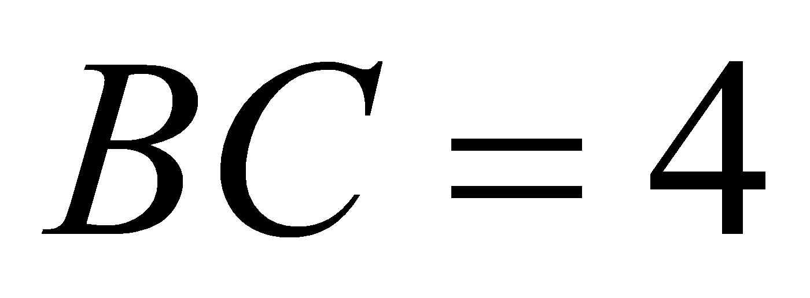
，∴，
∵点为线段的中点，
∴
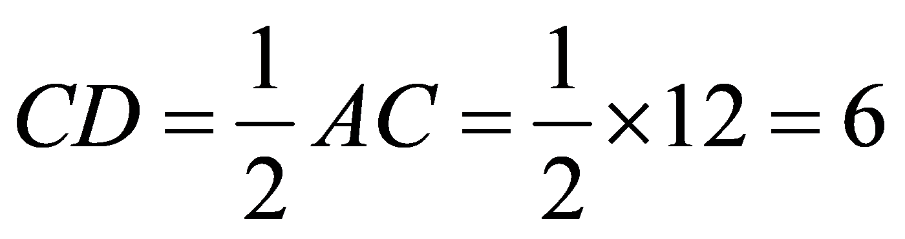
．故答案为：．
【变式1】（24-25七年级上·山东聊城·期末）已知线段，在的延长线上取一点C，使 ，在的反向延长线上取一点D，使
，在的反向延长线上取一点D，使 ，则线段的长度是线段
，则线段的长度是线段 的长度的 倍．
的长度的 倍．
【答案】
【分析】本题考查了两点间的距离，线段的和差，掌握两点间的距离，线段的和差计算是解题的关键．根据题意画出图形，由线段的和差倍分解答即可．
【详解】解：如图所示，
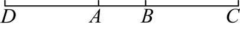
∵，
∴，
∵，
∴，
∴
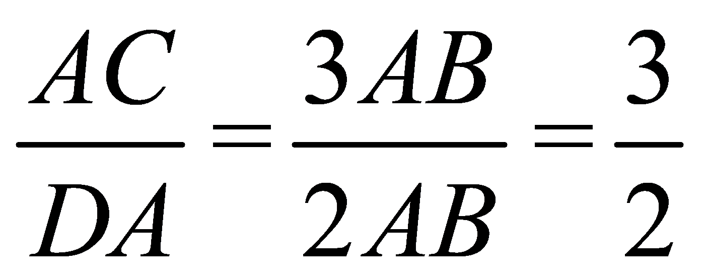
，故答案为：．
【变式2】（24-25七年级上·河北衡水·阶段练习）如图，、、 为线段
为线段 上的三个点，
上的三个点， ，线段的长为 ．
，线段的长为 ．
【答案】
【分析】本题考查了线段之间的和差关系．根据
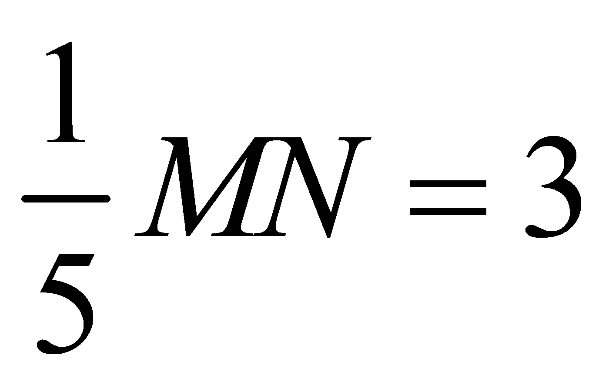
进行计算即可；【详解】解：∵，
∴，
故答案为：15．
【变式3】（24-25七年级下·内蒙古乌海·期末）若点，，在同一条直线上，如果线段
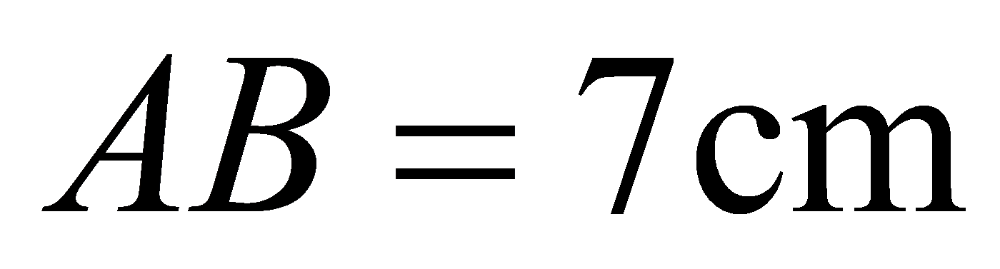
，线段 ，那么，两点之间距离是 ．
，那么，两点之间距离是 ．【答案】 或
或
【分析】本题考查两点间距离，分析两种情况求解：点可能在线段上，也可能在线段的延长线上，进而即可求解．根据题意画出图形是解题的关键，同时渗透了分类讨论的数学思想．
【详解】解：若点在线段上，如图，
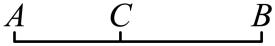
∵，，
∴
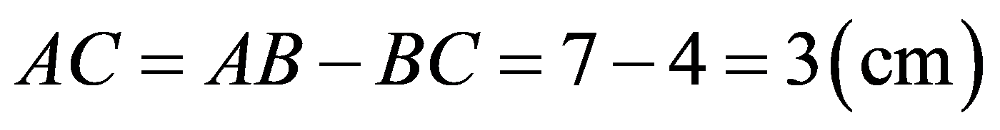
；若点在线段的延长线上，如图，
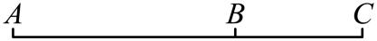
∵，，
∴
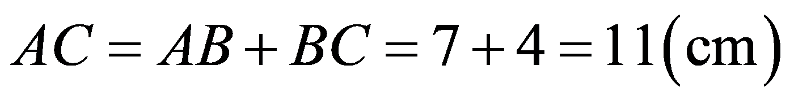
，综上所述，，两点之间距离是或．
故答案为：或．
题型04 作线段（尺规作图）
【典例4】（24-25七年级上·全国·课后作业）如图，已知线段 ，用直尺和圆规画出线段c，使它等于
，用直尺和圆规画出线段c，使它等于
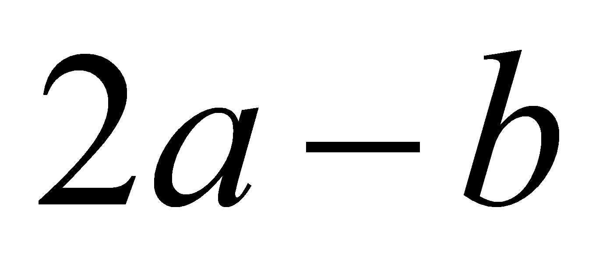
．（只写出作法）
解：（1）画射线 ；
；
（2）在射线上顺次截取 ______；
______；
（3）在线段 上截取
上截取 ______，线段______即为所求．
______，线段______即为所求．
【答案】（2）a；（3）b；
【分析】本题主要考查了线段之间的关系作图，根据第一二步得到 ，第三步截取后得，线段
，第三步截取后得，线段 即为所求．
即为所求．
【详解】解；（1）画射线；
（2）在射线上顺次截取
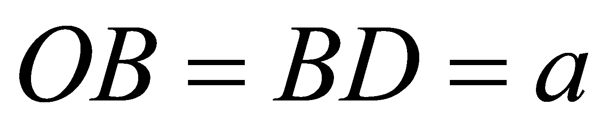
；（3）在线段上截取
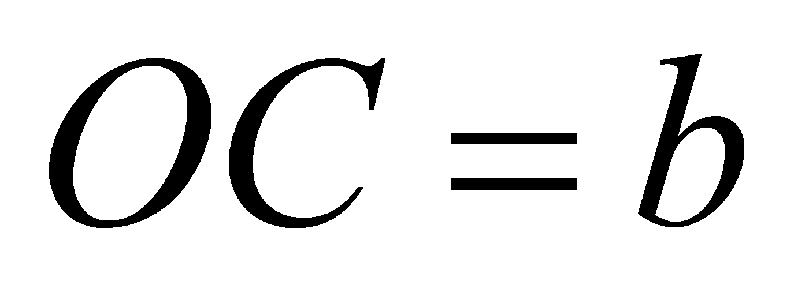
，线段即为所求．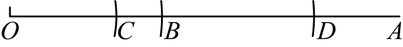
【变式1】（24-25七年级上·福建厦门·期末）如图，平面上有四个点A，B，C，D，根据下列语句画图：

(1)画线段， 交于E点；
交于E点；
(2)作射线；
(3)反向延长至F，使得 ．（不写作法，保留作图痕迹）
．（不写作法，保留作图痕迹）
【答案】(1)见解析
(2)见解析
(3)见解析
【分析】本题考查作图﹣复杂作图，直线，射线，线段，两点之间的距离等知识．
（1）根据线段的定义画出图形；
（2）根据射线的定义画出图形；
（3）在 的延长线上截取
的延长线上截取
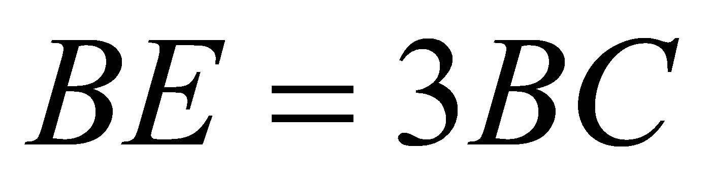
，在线段 上，截取，线段即为所求．
上，截取，线段即为所求．【详解】（1）解：如图，线段，交于E点，点E即为所求；
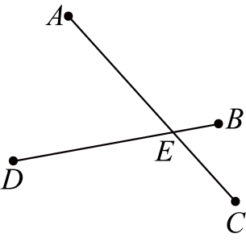
（2）解：如图，射线即为所求；
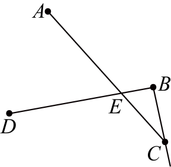
（3）解：如图，线段即为所求．
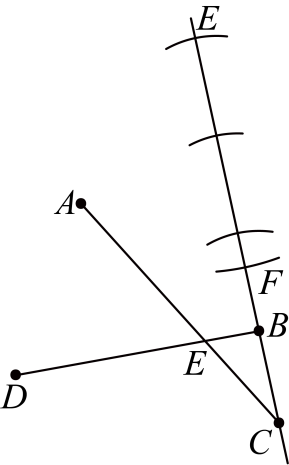
【变式2】（24-25六年级下·山东东营·阶段练习）如图，已知线段，请用尺规按下列要求作图：
(1)延长线段到C，使 ；
；
(2)延长线段 到D，使
到D，使
(3)如果 ，那么
，那么 ______
______ ，
，  ______， ______
______， ______
【答案】(1)见解析
(2)画图见解析
(3)4，6，8
【分析】本题考查了两点间的距离，利用了线段中点的性质，线段的和差．
（1）根据，可得线段；
（2）根据，可得线段；
（3）根据线段中点的性质，可得的长根据线段的和差，可得的长，根据线段中点的性质，可得的长．
【详解】（1）解：如图1所示；
（2）解：如图2所示；
（3）解：∵，，，
，
故答案为：4，6，8．
【变式3】（24-25七年级下·河南周口·阶段练习）（1）如图，已知线段 、
、 ．请用尺规按要求作图：
．请用尺规按要求作图：
①作线段；
②在线段的延长线上截取 ；(不要求写画法，保留作图痕迹)
；(不要求写画法，保留作图痕迹)
（2）若点是线段的中点，用含、的式子表示线段的长．
【答案】（1）①见解析；②见解析；（2）
【分析】本题考查了作线段、与线段中点有关的计算、整式加减的应用，熟练掌握作线段和线段的运算是解题关键．
（1）①根据作线段的方法，作线段即可得；
②根据作线段的方法，在线段的延长线上截取即可得；
（2）先求出，再根据线段中点的定义可得，然后根据即可得．
【详解】解：（1）①作线段，如图所示：
②在线段的延长线上截取，如图所示：
（2）∵，，
∴ ，
，
∵点是线段的中点，
∴，
∴．
题型05 线段中点的有关计算
【典例5】（24-25七年级上·山东临沂·阶段练习）如图，已知点为线段上一点，， ，
， 分别是
分别是 的中点．求：
的中点．求：
(1)求 的长度；
的长度；
(2)若 在直线上，且
在直线上，且 ，求
，求 的长度．
的长度．
【答案】(1)
(2) 或
或
【分析】本题主要考查了线段中点的有关计算，数形结合，注意分类讨论，是解题的关键．
（1）根据线段中点定义得出，，求出即可；
（2）分两种情况当点在线段上时，当点在线段的延长线上时，分别求出结果即可．
【详解】（1）解：∵，，
∴，
∵分别是中点，
∴，，
∴．
（2）解：由（1）可知， ，
，
①当点在线段上时，
∵，
∴，
②当点在线段的延长线上时，
∵，
∴，
∴的长为或．
【变式1】（24-25七年级上·江苏徐州·期末）如图，点C是线段上一点，点M是线段的中点，点N是线段的中点

(1)如果 ，求
，求 的长
的长
(2)如果 ，求的长
，求的长
【答案】(1)
(2)
【分析】本题考查了线段中点的性质及线段的和差计算，解题的关键是利用中点性质将线段长度进行转化，结合已知条件通过和差关系求解．
（1）主要关键步骤：由M是中点得求出长度；再由与的差求出长度；最后由N是中点得求出长度．
（2）主要关键步骤：由M、N分别是、中点得 、；根据
、；根据 推出，进而求出长度．
推出，进而求出长度．
【详解】（1）解：∵点M是线段的中点，
∴
∵
∴
∵
∴
∵点N是线段的中点
∴
（2）∵点M是线段的中点，点N是线段的中点
∴
∵
∴
【变式2】（24-25七年级上·江苏·期末）如图，点C为线段 上一点，点B为的中点，且．
上一点，点B为的中点，且．

(1)图中共有 条线段；
(2)求的长；
(3)若点E在直线上，且 ，求
，求 的长．
的长．
【答案】(1)6
(2)
(3) 或
或
【分析】本题考查了两点间的距离，线段中点的定义，线段的和差，正确的理解题意是解题关键．
（1）根据线段的定义，有两个端点，根据题目所给线段，枚举出所有线段即可；
（2）根据点B为的中点，，即可求得的长；
（3）分两种情况讨论：当点E在上时，当点E在 延长线上时，根据线段的和差关系求解即可．
延长线上时，根据线段的和差关系求解即可．
【详解】（1）解：图中的线段有共6条，
故答案为：6；
（2）解：∵点B为的中点，，
∴．
∵，
∴；
（3）解：分两种情况讨论：
①如图（1），当点E在上时，
∵，
∴；
②如图（2），当点E在延长线上时，
∵，
∴；
综上所述，的长为或．
【变式3】（24-25七年级上·湖南衡阳·期末）（1）如图1，点C为线段上一点，与 长度之比为3:5，D为线段中点．
长度之比为3:5，D为线段中点．

①若，求的长．
②点E为线段的中点，若 ，求的长（用含m的代数式表示）．
，求的长（用含m的代数式表示）．
（2）如图2，点M为线段中点，点N为线段中点，若， ，请用含a，b的代数式直接表示出的长．
，请用含a，b的代数式直接表示出的长．
【答案】（1）① ；②；（2）
；②；（2）
【分析】本题主要考查两点间的距离，利用了线段中点的性质，线段的和差求解线段的长是解题的关键．
（1）①由设，，根据可求解 值，即可得，的长，结合中点的定义可求解；②根据题意画出图形，由设，，则，利用线段的和差，结合中点的定义可求解，由，进而可求解的长．
值，即可得，的长，结合中点的定义可求解；②根据题意画出图形，由设，，则，利用线段的和差，结合中点的定义可求解，由，进而可求解的长．
（2）根据中点定义得到，即可求出．
【详解】（1）解：①由设，，
∵， ，
，
，
解得 ，
，
， ，
，
 为线段的中点，
为线段的中点，
，
．
②解：如图所示．
由设，，
∴，
为线段的中点，
，
，
 为的中点，
为的中点，
，
，
，
 ，
，
解得，
．
（2）∵点M为线段中点，点N为线段中点，
∴
∵，，
∴
∴
∴
题型06 线段n等分点的有关计算
【典例6】二等分点：又叫线段的 ，把线段分成 的两部分．

即：如图，若点P是线段 的中点，则或
的中点，则或
三等分点：把线段分成 的三部分．以此类推．
【答案】 中点 相等 相等
【知识点】线段之间的数量关系、线段n等分点的有关计算
【分析】本题考查了线段的中点，线段的三等分点，正确理解定义是解题的关键．
【详解】二等分点：又叫线段的中点，把线段分成相等的两部分．
即：如图，若点P是线段AB的中点，
则或
三等分点：把线段分成相等的三部分．以此类推．
故答案为：中点；相等；相等．
【变式1】已知线段 ，延长
，延长 至点C，使，点D、E均为线段延长线上两点，且
至点C，使，点D、E均为线段延长线上两点，且 ，M、N分别是线段
，M、N分别是线段 的中点，当点C是线段
的中点，当点C是线段 的三等分点时，
的三等分点时， 的长为 ．
的长为 ．
【答案】40或80
【知识点】线段的和与差、线段中点的有关计算、线段n等分点的有关计算
【分析】本题考查了线段的和差问题，画出线段有助于更直观地解题，注意分情况讨论．分 时和
时和 时两种情况，画出对应的图形分别讨论求解即可．
时两种情况，画出对应的图形分别讨论求解即可．
【详解】解：∵，，N是线段的中点，
∴ ，
， ，
，
①若，如图1所示：
∵，
∴，
∵，
∴
∴ ，
，
∵M是线段 的中点，N是线段的中点，
的中点，N是线段的中点，
∴， ，
，
∴ ；
；
②若，如图：
∴，
∵，
∴ ，
，
∴ ，
，
∵M是线段的中点，N是线段的中点，
∴ ，，
，，
∴；
故答案为：40或80．
【变式2】如图， 为线段
为线段 上一点，点
上一点，点 为
为 的中点，已知
的中点，已知 ．
．
(1)求 的长；
的长；
(2)若点 是线段
是线段 上靠近点A的三等分点，求
上靠近点A的三等分点，求 的长．
的长．
【答案】(1)
(2)
【知识点】线段n等分点的有关计算、线段中点的有关计算、线段的和与差
【分析】本题考查的是线段的中点的含义，线段的和差关系，掌握以上知识是解题的关键．
（1）根据线段的和差，求得的长，再根据线段中点的性质，可求出的长；
（2）先求得 的长，再根据线段的和差，可得答案．
的长，再根据线段的和差，可得答案．
【详解】（1）解：因为，
所以 ，
，
因为点为的中点，
所以；
（2）解：因为 ，点是线段上靠近点A的三等分点，
，点是线段上靠近点A的三等分点，
所以 ，
，
则．
所以 ．
．
【变式3】已知线段 ，C是线段上任意一点（不与点A，B重合）．
，C是线段上任意一点（不与点A，B重合）．

(1)若M，N分别是 的中点，求的长度；
的中点，求的长度；
(2)若 ，
， ，求的长；
，求的长；
(3)在（2）的条件下，若且G点在直线上， ，求
，求 的长度．
的长度．
【答案】(1)
(2)
(3)或
【知识点】线段的和与差、线段中点的有关计算、线段n等分点的有关计算
【分析】本题考查了线段的n等分点有关的计算，线段的和差，理解线段n等分点的定义是解答本题的关键．
（1）由中点的定义可得 ，
， ，然后根据求解即可；
，然后根据求解即可；
（2）由，可得 ，，然后根据求解即可；
，，然后根据求解即可；
（3）先求出线段的长，然后分点G在线段上和点G在线段的延长线上两种情况求解即可．
【详解】（1）∵M，N分别是的中点，
∴，，
∴．
∵，
∴ ；
；
（2）∵，，
∴，，
∴，
∵，
∴；
（3）∵，，
∴．
∵，
∴，
∴．
当点G在线段上时，；
当点G在线段的延长线上时，．
综上可知，的长度为或．
题型07 与线段有关的动点问题
【典例7】（24-25七年级上·山东青岛·阶段练习）已知线段，点C为线段上的一个动点（点C不与A、B重合），点D、E分别是和的中点
(1)若 ，求的长；
，求的长；
(2)若点C恰好是的中点，且，求的长．
【答案】(1)
(2)
【分析】本题考查了与线段中点有关的计算，线段的和差，熟练掌握以上知识点并灵活运用是解此题的关键．
（1）由题意可得，，再由计算即可得解；
（2）由题意可得 ，，，结合计算即可得解．
，，，结合计算即可得解．
【详解】（1）解：如图：
，
∵点D、E分别是和的中点，
∴，，
∵，
∴；
（2）解：∵点C恰好是的中点，
∴，
∵点D、E分别是和的中点，
∴，，
∴，
∴．
【变式1】（24-25七年级下·北京·期末）已知点C为线段上一动点，点D，E分别是线段和的中点．

(1)如图，若线段  ，求线段的长；
，求线段的长；
(2)若线段的长为，则线段的长为 （用含的代数式表示）．
【答案】(1)
(2)
【分析】本题主要考查了线段的和差，线段中点的性质等知识点，解题的关键是熟练掌握线段中点的性质．
（1）利用线段的和差表示出相关的线段，再利用线段中点的性质求解即可；
（2）假设线段的长为，线段的长为，则线段的长为 ，利用线段中点的性质即可表示出线段的长．
，利用线段中点的性质即可表示出线段的长．
【详解】（1）解：∵，
∴，
∵点D，E分别是线段和的中点，
∴，
；
（2）解：假设线段的长为，线段的长为，则线段的长为，
∵点D，E分别是线段和的中点，
∴，
，
故答案为：．
【变式2】（2024七年级上·全国·专题练习）如图，已知线段，点M从点A出发以 的速度沿的方向运动，同时点N从点B出发以的速度沿的方向运动，其中一个点到达端点时，另一个点也同时停止，设运动时间为
的速度沿的方向运动，同时点N从点B出发以的速度沿的方向运动，其中一个点到达端点时，另一个点也同时停止，设运动时间为 ．
．
根据题意回答下列问题：
(1)当 时，
时， ______；当
______；当 时，______．
时，______．
(2)若C为线段上一点，当点M与N相遇时，设相遇的位置为点．
①若，求线段的长；
②若，求线段的长．
【答案】(1)，
(2)①，②线段的长为或
【分析】本题考查代数式，一元一次方程，线段的运算，熟练掌握线段的运算是解题的关键；
（1）根据速度时间关系，可以求得相对应线段的长度，利用线段之间运算即可求解；
（2）①由题意，得 ，，根据相遇关系列方程，求得
，，根据相遇关系列方程，求得 的值，求出的值，进而求解；
的值，求出的值，进而求解；
②根据题意，求得的长度，进而分情况讨论，即可求解；
【详解】（1）解：当时，，
，
当时，，，
，
故答案为：，
（2））①由题意，得，，
当点， 相遇时，，，
相遇时，，，
则 ，
，
所以，
因为，
所以，
所以；
②由①可得，，
因为，
所以，
当点C在点D左侧时，，
当点C在点D右侧时，，
故线段的长为或．
【变式3】（24-25七年级上·陕西咸阳·期末）如图，已知数轴上点表示的数为，点表示的数为，满足．动点 从点出发以每秒4个单位长度的速度沿数轴向左匀速运动，设运动时间为秒．
从点出发以每秒4个单位长度的速度沿数轴向左匀速运动，设运动时间为秒．

(1)数轴上点表示的数是_______，点表示的数是_______；
(2)若点从点出发向左运动，点 为
为 的中点，在点到达点之前，求证：为定值．
的中点，在点到达点之前，求证：为定值．
【答案】(1)16，
(2)证明见解析
【分析】本题考查了绝对值的非负性、数轴、线段的中点等知识，熟练掌握数轴的性质是解题关键．
（1）根据绝对值的非负性可得，由此即可得；
（2）先根据数轴的性质可得 ，点表示的数是
，点表示的数是 ，再求出
，再求出 ，然后根据线段中点的定义可得
，然后根据线段中点的定义可得 ，则可得
，则可得 ，代入计算即可得证．
，代入计算即可得证．
【详解】（1）解：∵ ，，
，，
∴ ，
，
∴，
∵数轴上点表示的数为，点表示的数为，
∴数轴上点表示的数是16，点表示的数是，
故答案为：16，．
（2）证明：由（1）已得：数轴上点表示的数是16，点表示的数是，
∴ ，
，
∵动点从点出发以每秒4个单位长度的速度沿数轴向左匀速运动，运动时间为秒，
∴点表示的数是，
∴在点到达点之前， ，，
，，
∵点为的中点，
∴，
∴ ，
，
∴，
∴为定值．
【变式4】（24-25七年级上·河南郑州·阶段练习）如图①，已知点C在线段 上，线段
上，线段 厘米，
厘米， 厘米，点M，N分别是
厘米，点M，N分别是 ，
， 的中点．
的中点．

(1)求线段 的长度；
的长度；
(2)根据第（1）题的计算过程和结果，设 ，其他条件不变，求的长度；
，其他条件不变，求的长度；
(3)动点P、Q分别从A、B同时出发，点P以2厘米/秒的速度沿向右运动，终点为B，点Q以1厘米/秒的速度沿 向左运动，终点为A，当一个点到达终点，另一个点也随之停止运动，求运动多少秒时：
向左运动，终点为A，当一个点到达终点，另一个点也随之停止运动，求运动多少秒时：
①点P恰好为线段 的中点？
的中点？
②直接写出C、P、Q三点中有一点恰好是以另两点为端点的线段的中点？（除①外）
【答案】(1) 厘米
厘米
(2)
(3)① ② 或
或
【分析】本题考查了线段的中点和计算，利用线段中点的性质得出关于t的方程是解题关键，要分类讨论，以防遗漏．
（1）根据中点的定义、线段的和差，可得答案；
（2）根据中点的定义、线段的和差，可得答案；
（3）①分为为线段 的中点和为线段
的中点和为线段 的中点，利用线段中点的定义，可得方程，根据解方程，可得答案；
的中点，利用线段中点的定义，可得方程，根据解方程，可得答案；
②分为C为线段的中点和点为线段 的中点，利用线段中点的定义，可得方程，根据解方程，可得答案．
的中点，利用线段中点的定义，可得方程，根据解方程，可得答案．
【详解】（1）解：∵线段  厘米，
厘米，  厘米，点, 分别是, 的中点,
厘米，点, 分别是, 的中点,
厘米，  厘米，
厘米，
 厘米；
厘米；
（2）∵点, 分别是 的中点,
的中点,
 ，
，
 ；
；
（3）解：①当  时，为线段的中点，
时，为线段的中点， ，
，
解得；
②当 时，是线段
时，是线段 的中点，得
的中点，得 
解得 
当 时，为线段的中点， 
解得 
当 时，为线段的中点，
时，为线段的中点， 
解得(舍) ,
综上所述：或

一、单选题
1．（24-25七年级上·广东东莞·期末）亮亮准备从学校出发，开车去南山滑雪场滑雪，他打开导航，显示两地直线距离为，但导航提供的三条可选路线长却分别为 ，
， ，
， ．能解释这一现象的数学知识是（ ）
．能解释这一现象的数学知识是（ ）
A．两点确定一条直线 B．两点之间，线段最短
C．两点之间，直线最短 D．经过一点有无数条直线
【答案】B
【分析】本题主要考查了线段的性质，即两点之间，线段最短．
【详解】解：亮亮打开导航，显示两地直线距离为，但导航提供的三条可选路线长却分别为，，，
能解释这一现象的数学知识是：两点之间，线段最短．
故选：B．
2．（21-22七年级上·甘肃武威·期末）如图，小莹利用圆规在线段 上截取线段
上截取线段 ，使
，使 ．若点D恰好为的中点，则下列结论中正确的是（ ）
．若点D恰好为的中点，则下列结论中正确的是（ ）

A． B．
B． C． D．
C． D．
【答案】B
【分析】此题考查了线段中点和线段的和差倍分，由点D为CE的中点，可得，再结合 ，再逐一分析各选项即可得到答案．
，再逐一分析各选项即可得到答案．
【详解】解：∵点D为的中点，
∴，，故A错误，B正确；
∵，
∴，故C、D错误；
故选：B．
3．（25-26七年级上·全国·课后作业）下列说法不正确的是（ ）
A．若点C在线段 上，则
上，则
B．若 ，则点C一定在线段外
，则点C一定在线段外
C．若 三点不在一直线上，则
三点不在一直线上，则
D．若点C在线段 的延长线上，则
的延长线上，则
【答案】D
【分析】本题主要考查的是两点间的距离，线段的性质，掌握线段的性质是解题的关键．根据线段的概念和定义，进行分析．
【详解】解：A、若点 在线段上，则，故该选项正确，不符合题意；
在线段上，则，故该选项正确，不符合题意；
B、若，则点一定在线段外，故该选项正确，不符合题意；
C、若 、
、 、三点不在同一条直线上，则，故该选项正确，不符合题意；
、三点不在同一条直线上，则，故该选项正确，不符合题意；
D、若点在线段的延长线上，则，故该选项不正确，符合题意；
故选：D．
4．（24-25七年级上·广东东莞·期末）已知A、B、C三点在同一条直线上，如果线段 ，，那么A、C两点间的距离为（ ）
，，那么A、C两点间的距离为（ ）
A． B．
B． C．或 D．不能确定
C．或 D．不能确定
【答案】C
【分析】本题考查了两点间的距离，线段的和与差，掌握两点间的距离，线段的和差计算是解题的关键．
根据题意，分两种情况画出图形分析：①当点C在点B的左侧时；②当点C在点B的右侧时．根据两点间的距离，线段的和差计算解答即可．
【详解】解：分两种情况：
①如图所示，当点C在点B的左侧时，
 ，，
，，
；
②如图所示，当点C在点B的右侧时，
，，
；
综上所述，A、C两点间的距离为或．
故选：C．
5．（23-24七年级上·山东临沂·期末）如图，已知A，B（B在A的左侧）是数轴上的两点，点A对应的数为12，且 ，动点P从点A出发，以每秒2个单位长度的速度沿数轴向左运动，在点P的运动过程中，M，N始终为
，动点P从点A出发，以每秒2个单位长度的速度沿数轴向左运动，在点P的运动过程中，M，N始终为 ，
， 的中点，设运动时间为t（）秒，则下列结论中正确结论的个数是（ ）
的中点，设运动时间为t（）秒，则下列结论中正确结论的个数是（ ）
①B对应的数是 ；
；
②点P到达点B时，；
③ 时，
时， ；
；
④在点P的运动过程中，线段 的长度会发生变化．
的长度会发生变化．
A．①② B．①②③ C．①③④ D．①②③④
【答案】A
【分析】本题考查了数轴的应用，线段的中点性质，根据题目的已知条件并结合图形分析是解题的关键．
根据两点间距离进行计算即可判断①；利用路程除以速度即可判断②；分两种情况，点P在点B的右边，点P在点B的左边，由题意求出的长，
再利用路程除以速度即可判断③；分两种情况，点P在点B的右边，点P在点B的左边，利用线段的中点性质进行计算即可判断④；
【详解】∵A，B（B在A的左侧）是数轴上的两点，点A对应的数为12，且，
∴B对应的数为，故①正确；
∵，
∴点P到达点B时，，故②是正确的；
当点P在点B右边时，
∵，
∴，
∴；
当点P在点B左边时，
∵，
∴，
∴，
∴时，或 ，故③错误；
，故③错误；
在点P的运动过程中，当点P在点B右边时，
；
在点P的运动过程中，当点P在点B左边时，
；
∴在点P的运动过程中，线段的长度不会发生变化，故④错误；
∴正确结论有①②，
故选：A．
二、填空题
6．（25-26八年级上·黑龙江佳木斯·阶段练习）如图，已知线段上有两点C、D，且 ，M、N分别是线段
，M、N分别是线段 的中点，若
的中点，若 ，则线段的长为 ．
，则线段的长为 ．
【答案】
【分析】本题主要考查了与线段中点有关的线段和差计算，先由线段的和差关系可得 的长，再由线段中点的定义可得的长，进而可得线段的长．
的长，再由线段中点的定义可得的长，进而可得线段的长．
【详解】解：∵，
∴，
∵M、N分别是线段的中点，
∴，
∴，
故答案为：．
7．（24-25七年级上·河南郑州·期中）小明从衡阳乘高铁到成都，发现这条火车路线上共有10个站(衡阳东，长沙南，武汉，汉口，宜昌东，荆州，恩施，丰都，重庆北站，成都东)，且任意两站之间的票价都不相同，则有 不同的票价，要准备 不同的车票．
【答案】 45种 90种
【分析】本题考查了线段数量的问题，掌握线段的计数方法是解题的关键．先求出线段的条数，一条线段就是一种票价，车票是要考虑顺序，即可求解．
【详解】解：根据题意，相当于一条直线上有10个点，有多少种不同的票价即有多少条线段：(种)．
故答案为：45种；
有多少种车票是要考虑顺序的，则有(种)．
故答案为：90种．
8．（24-25七年级上·甘肃兰州·期末）如图，点、 分别是线段
分别是线段 上两点(
上两点( ，)，用圆规在线段
，)，用圆规在线段 上截取
上截取 ，，若点
，，若点 与点
与点 恰好重合，
恰好重合， ，则 ．
，则 ．

【答案】
【分析】本题考查了线段的和差计算，根据题意得出， ，进而根据，即可求解．
【详解】解：∵，，点与点恰好重合，
，，
∴， ．
∴．
故答案为：4．
9．（24-25七年级上·山东枣庄·期末）线段 ，点C为线段上的三等分点，当点D为线段
，点C为线段上的三等分点，当点D为线段 的中点，则线段
的中点，则线段 的长为 ．
的长为 ．
【答案】2或4
【分析】此题主要考查线段之间的关系，中点的定义，解题的关键是熟知线段的和差关系.
根据点C是线段上的三等分点，分两种情况画图进行计算即可．
【详解】解：如图，
点C是线段上的三等分点， ，
，
D是线段 的中点，，
的中点，，
；
如图，
点C是线段上的三等分点， ，
，
D是线段的中点，，
；
则的长为2或4．
故答案为：2或4
10．（23-24七年级上·江西上饶·期中）数轴上的三个点，若其中一个点与其它两个点的距离相等，则称该点是其它两个点的“中点”，这三点满足“中点关系”．已知，如图点，表示的数分别为 ，
， ，点为数轴上一动点．若，，三点满足“中点关系”时，则点表示的数为 ．
，点为数轴上一动点．若，，三点满足“中点关系”时，则点表示的数为 ．

【答案】或 或
或
【分析】本题考查数轴上两点间的距离，掌握两点间的距离公式是解题的关键．根据中点到其它两点之间的距离相等，分，，点分别为其它两个点的中点，三种情况进行求解即可．
【详解】解：①当点为点，的中点时，点表示的数为 ；
；
②当点为点，的中点时，点表示的数为；
③当点为点，的中点时，点表示的数为；
综上：点表示的数为或或；
故答案为：或或．
三、解答题
11．（24-25七年级上·福建福州·期末）如图， ，点C是线段的中点，点D是线段
，点C是线段的中点，点D是线段 上一点，
上一点， ，求
，求 的长．
的长．
【答案】的长为
【分析】
本题考查了两点间的距离，解题的关键是掌握线段中点的性质，线段的和差，利用已知条件 的长及的长，再利用线段的和差，求出的长．
的长及的长，再利用线段的和差，求出的长．
【详解】
解：∵ ，点是线段的中点，
，点是线段的中点，
∴，
∵点D是线段上一点，，
∴，
∴，
∴，
∴．
答：的长为．
12．（24-25七年级上·全国·期末）如图，B、C、D依次为线段AE上的三个点．已知 ，
， ，
， ．
．

(1)求 的长；
的长；
(2)求图中所有线段长度的和．
【答案】(1)2
(2)
【分析】本题考查了线段的和与差，关键是分析出线段间的关系．
（1）分析出占整条线段的比例求出长度；
（2）列出以A、C、D、B、E这5个点为端点的所有线段，然后根据整合为已知两线段的长求解．
【详解】（1）解：，
．
，
．
．
（2）解：由（1）知．图中共有10条线段，分别为， ，，
，， ，，，，，，
，，，，，， ，它们的长度之和为：
，它们的长度之和为：
 ．
．
13．（24-25七年级上·湖北武汉·期末）如图，已知平面上四个点A，B，C，D，请按要求完成下列问题：
(1)画直线，射线，连接；
(2)在线段上求作点P，使得；（保留作图痕迹）
(3)在线段上求作点E，使得点E到A、D、B、P的距离之和最小，这样做的理由是_______________________________________________．
【答案】(1)见解析
(2)见解析
(3)两点之间线段最短
【分析】本题考查作图-复杂作图，直线，射线，线段，两点间距离，解题的关键是掌握相关知识解决问题．
（1）根据直线，射线，线段的定义画出图形；
（2）在线段上截取线段，使得即可；
（3）连接交于点E，点E即为所求．
【详解】（1）解：如图，直线，射线，线段即为所求；
（2）如图，线段 即为所求；
即为所求；
（3）如图，点E即为所求．理由：两点之间线段最短．
14．（24-25七年级上·全国·期末）如图，点C是线段的中点．

(1)请按下列要求画出图形（尺规作图，保留作图痕迹，不用写作法）．延长线段至点D，使 ，延长至点E，使．并求
，延长至点E，使．并求  的值；
的值；
(2)若 ，求的长．
，求的长．
【答案】(1)见解析
(2)20
【分析】本题主要考查了线段的中点，线段的和差；
（1）先作出图形，设，则，推导出，即可得出答案；
（2）先求出 ，
， ，可得到则，即可解答．
，可得到则，即可解答．
【详解】（1）解：所作图形，如图所示，
∵点是线段的中点，
∴，
设，则，
∵，
∴，
∴，
∴；
（2）∵点是线段的中点，
∴ ，
，
又∵，
∴，
∴，
又∵，
∴，
∴，
∴的长为20．
15．（24-25七年级上·全国·期末）如图所示，点C在线段上， ，
， ，点
，点 分别是的中点．
分别是的中点．

(1)求 的长度；
的长度；
(2)求的长度；
(3)若点P在直线上，且 ，点
，点 为
为 的中点，求
的中点，求 的长度．
的长度．
【答案】(1)
(2)
(3) 或
或
【分析】本题主要考查了与线段中点有关的计算，熟练掌握线段中点的计算是解题关键．
（1）先根据线段的和差可得，再根据线段中点的定义求解即可得；
（2）先根据线段中点的定义可得，再根据线段的和差求解即可得；
（3）分两种情况：①当点 在线段上时，②当点在线段的延长线上时，先根据线段的和差可得的长，再根据线段中点的定义可得
在线段上时，②当点在线段的延长线上时，先根据线段的和差可得的长，再根据线段中点的定义可得 的长，然后根据线段的和差求解即可得．
的长，然后根据线段的和差求解即可得．
【详解】（1）解：∵，，
∴，
∵点 是的中点，
是的中点，
∴．
（2）解：∵点 是的中点，，
是的中点，，
∴，
由（1）已得：，
∴．
（3）解：①如图，当点在线段上时，
∵，，
∴，
∵点为的中点，
∴，
由（1）已得：，
∴；
②如图，当点在线段的延长线上时，
∵，，
∴，
∵点为的中点，
∴，
由（1）已得：，
∴；
综上，的长为或．
16．（2024七年级下·广东梅州·竞赛）如图，数轴上点A表示的数为a，点B表示的数为b，C是的中点，且a、b满足 ．
．

(1)求点C表示的数；
(2)若点P从A点出发向右运动，点M为的中点，在点P到达点B之前，求证为定值；
【答案】(1)3
(2)见解析
【分析】本题考查了整式的加减，绝对值及平方运算的非负性，中点公式，数轴上的两点之间距离公式等，牢记中点公式是解题的关键．
(1)首先由绝对值及平方运算的非负性，可求得，再根据点C是的中点，即得点C表示的数；
(2)设点P运动的速度为v，时间是t，得点P表示的数和M表示的数，从而得与 ，据此即可证得．
，据此即可证得．
【详解】（1）解：
 ，
，
点C是的中点，
点C表示的数是；
（2）证明：设点P运动的速度为v，时间是t，则点P表示的数是，
点M为的中点，
点M表示的数是，
，，
，
为定值．
17．（24-25七年级上·辽宁沈阳·期中）如图，在数轴上点A表示 ，点B表示b，点C表示c，并且是多项式的二次项系数，b是数轴上最小的正整数，单项式
，点B表示b，点C表示c，并且是多项式的二次项系数，b是数轴上最小的正整数，单项式 的次数为c．
的次数为c．

(1)由题意可得： ______，
______， ______，
______， ______．
______．
(2)点A、B、C在数轴上运动，若点A以每秒1个单位长度的速度沿数轴向左运动，点B和点C分别以每秒2个单位长度和4个单位长度的速度沿数轴向右运动，设点A、B、C同时运动，运动时间为t秒．
①当 时，分别求的长度．
时，分别求的长度．
②在点A、B、C同时运动的过程中， 的值是否随着时间t的变化而变化？若变化，说明理由；若不变，求出的值．
的值是否随着时间t的变化而变化？若变化，说明理由；若不变，求出的值．
【答案】(1) ，1，8；
，1，8；
(2)①， ；②变化，理由见详解．
；②变化，理由见详解．
【分析】本题考查了数轴，有理数的运算，线段的和差，整式的加减运算；
（1）根据单项式中的数字因数叫做单项式的系数，一个单项式中所有字母的指数的和叫做单项式的次数，再结合数轴可得答案；
（2）①根据题意得，，再代入即可求解；
②根据，，表示出，再根据整式加减求解即可．
【详解】（1）解：多项式的二次项系数是，则 ，
，
数轴上最小的正整数是1，则 ，
，
单项式的次数为8，则，
故答案为：，1，8；
（2）解：①∵，，
∴当时，，；
②不改变，∵，，
∴．
∴的值随着时间 的变化而改变．
的变化而改变．
18．（24-25七年级上·浙江嘉兴·阶段练习）如图，点P是线段上一点，且满足 ，点C，D分别在线段，上．
，点C，D分别在线段，上．
(1)若，探究线段， 的数量关系；
的数量关系；
(2)若点Q是直线上一动点，且 ，求
，求 的值；
的值；
(3)若E是线段上的一个动点，点M，N分别是， 的中点，以下两个结论：
的中点，以下两个结论：
①的值不变，② 的值不变，其中只有一个结论是正确的，请你找出正确的结论并求值．
的值不变，其中只有一个结论是正确的，请你找出正确的结论并求值．
【答案】(1)
(2) 或
或
(3)①不正确；②正确，
【分析】本题考查了线段的和差，线段的中点相关计算；
（1）设，，由线段的和差得，，即可求解；
（2）分类讨论：当在线段的延长线上时，由线段和差得，可得 ，即可求解；当在线段上时，同理可求；
（3）分类讨论：当、在在左侧时，由线段中点的定义得，，由线段的和差得，求出，，即可求解； 当、在在两侧时，同理可求；当、在在右侧时，同理可求；
能熟练利用线段的和差表示出所求线段，并能根据动点的不同位置进行分类讨论是解题的关键．
【详解】（1）解：设，，
则，，
，
，
；
（2）解：当在线段的延长线上时，
，
，
，
；
当在线段上时，
，
，
，
，
，
，
，
，
，
，
，
；
故答案：或；
（3）解：当、在在左侧时，
点M，N分别是，的中点，
，
，
，
，
，
的值不确定，
的值不确定，
故①不正确；
，
，
故②正确；
当、在在两侧时，
点M，N分别是，的中点，
，
，
，
的值不确定，
故①不正确；
，
，
故②正确；
当、在在右侧时，
点M，N分别是，的中点，
，
，
，
，
的值不确定，
的值不确定，
故①不正确；
，
，
故②正确；
综上所述：①不正确；②正确，．